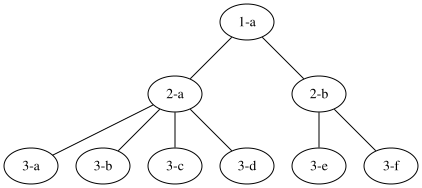
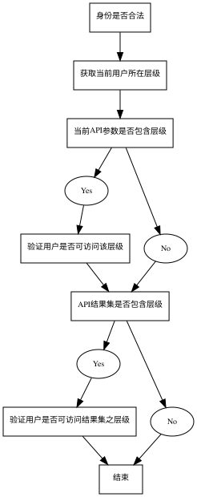
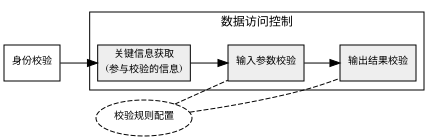

面向数据的访问权限控制（分析与实现）
使用过spring全家桶的朋友们，提起权限控制，一定会想到spring security，没错，spring security实现访问控制非常方便简洁。但在企业级应用中，仅有功能权限控制是不够的，例如，A与B同一角色，但分属不同部门，其所看到的数据是完全不同的。简而言之，即：
角色（role）或权限（privilege）只是对行为（api、method）等在代码级做的控制。
而数据访问权限的控制，是面向数据的权限控制。
那么今天来介绍一下，笔者在实际应用中，是如何“优雅”的实现数据权限控制：
什么场景需要面向数据做访问控制？
拿刚刚的例子来说，两个同级别同角色的人，由于身处不同的部门，其数据可见性是不同的，A能看到A所在部门的数据，却不能看到B所在部门的数据。如下图中每个节点上的人，都只能看到本节点及以下节点的数据：

从功能上来说，我们希望：
- 结果集过滤：查看结果时根据当前用户所在层级加过滤条件
- 平行越权控制：即增删改查别人的数据，此时，应拒绝访问，并给出提示
界定清楚权限控制的职责
首先，从单一职责的角度出发，应当将结果集过滤归于业务处理的范畴，对于API而言，由参数决定其资源范围；对于方法而言，由入参决定其返回结果范围；做到input与output对应。于是，我们只剩下第二个平行越权控制需要放在权限控制来考虑，即：如果你访问了不该访问的数据，拒绝访问，并给出错误提示（通常是403 forbidden）。
可即便如此，每个api每个方法都这么校验，尤其不同api校验规则可能还不一样，这将是多么浩大并且不易维护的一个工作啊！
如何抽取公共组件
那么，有没有现成的框架来实现数据权限控制呢？同样是普遍面临的权限控制问题，面向功能的控制，如spring security一样的框架，非常之多，而数据权限控制就少之又少呢？
原因很简单：面向数据的权限控制，与功能权限控制相比，其与业务相关度更大，没有一家企业的层级结构与业务逻辑是一样的。
举几个例子：
- A公司的部门职级非常严谨，每个人只能看到比自己低级别的人的数据；
- B公司很宽松，只有部分敏感信息不可见，其他信息人人可见；
- C公司有特权部门，在该部门的人，不受级别限制，可以操作全公司的数据，其他部门则不然；
- D公司数据对所有人可见，但不同级别有不同的修改权限，低级别的人不能删除修改，可以增加，高级别的增删改查均可……
这样例子数不胜数，那我们就没有什么办法抽象出一个数据控制层来统一处理吗？
当然有办法。只是粒度问题。
我们需要抽取一个与业务无关，或者能够将业务代理出去的框架，唯有这样才能称之为框架。
首先，我们来考虑当一个请求进来时，有多少事情要做（以api粒度列出）：

在我们的例子中，有两处需要与用户所属层级进行比对：
| No. | Item | Descrition |
|---|---|---|
| 1 | 参数校验 | 例如：获取某部门下数据，/api/XXX?deptId=123 |
| 2 | 结果集校验 | api所返回的api，是否包含不可访问的内容？ |
那么有朋友要问，如果我的权限设计里，用的不是层级来做比对，而是有其他业务规则，怎么办？
好问题，如果我们把与业务逻辑的部分抽离，仅仅按照操作顺序可以列出如下几步：
好，现在这几个步骤已经与业务无关了。其中：
- 身份校验，由负责功能权限验证的框架来实现（如spring security）；
- 获取关键信息，也可以从功能权限控制的代码得到，我们只需要实现一个接口即可。
- 输入参数校验，输入是最重要的部分，前面我们提到过，输入参数和结果应该是吻合的，因此很大一部分api根据参数足以完成平行越权的校验。对于那些在api内部通过session获取当前用户，完成过滤查询结果集的情形，既然用户信息已经获得了，自然也无需校验了。即便校验，也可以在条件查询的方法内部，继续校验入参。仍然是一样的原理。
- 输出参数校验，考虑极少数的情形下，按照登录用户附带信息查询到的结果，仍然存在不允许访问的数据，那么我们需要对结果进行处理（过滤或者回滚）。原则上，完成了输入校验后，还存在这种情形，应考虑是否设计存在漏洞，以至于输入输出不符。
到此，我们的新框架职责梳理清楚了。
真的吗？
难道不需要考虑一下，如果项目中存在内部定时任务、系统集成、微服务互访等等不存在登录用户的情形吗？
嗯，我们前面的分析，都建立在，有登录用户，取得了校验所需必要信息的基础上。如果你的项目存在上面这些没有登录用户的校验，是否需要进行数据访问控制校验？
无论你的答案是Yes或No，我们已经意识到，这是一个必须定制的点，由此，我们可以得到这套新框架需要哪些模块了。

基于Spring AOP实现数据访问控制
分析清楚开发任务之后，下来我们来实现，这里安利一下笔者自己实现的一套代码：https://github.com/lotuswlz/data-access-security.git
（未完待续）